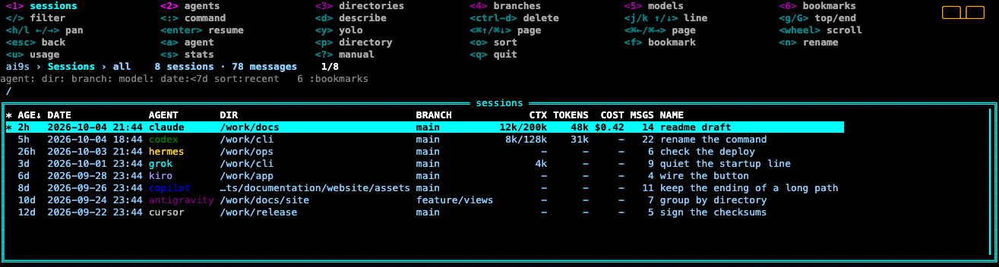
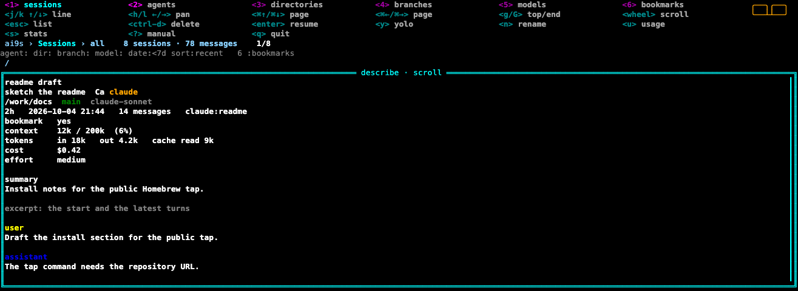
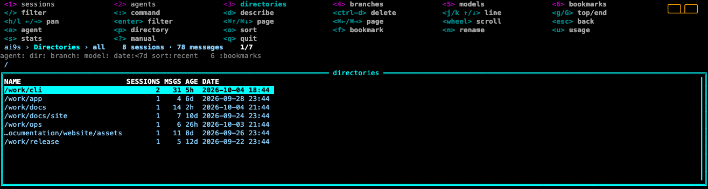
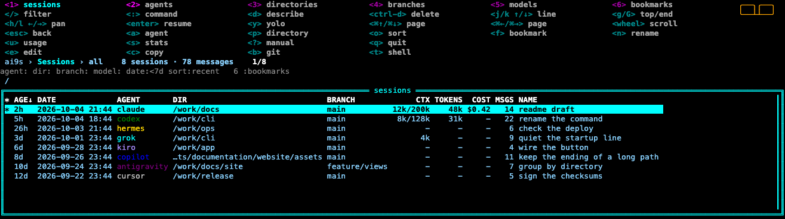

Who left the agents running?
ai9s is a terminal UI for the AI coding sessions already on your machine. It indexes them locally, then lets you search, preview, filter, resume, and — where it is safe — delete them.
The list works like a cluster browser: a hotkey menu, a crumbs bar, and one framed table. d describes the selected row. Ctrl-D deletes. Colors and plugins live in a config file, the same way k9s does. Nothing is uploaded.
brew tap AymanZahran/ai9s https://github.com/AymanZahran/ai9s
brew trust aymanzahran/ai9s
brew install ai9sapt, dnf, yum, zypper, apk, pacman, Nix, mise, Scoop, WinGet, Chocolatey, the archives, and go install are on the install page. Building from source requires Go 1.25 or newer.
Features
- Sessions at your fingertips
- Claude, Codex, Copilot CLI, Grok, Antigravity, Gemini CLI, Cursor, OpenCode, Hermes, OpenClaw, Junie, Jules, Goose, Cline, Aider, Kiro, Kimi, MiniMax, Qwen, and Mistral Vibe.
- The directory you start in
- A project directory lists sessions in that directory and its subdirectories. Your home directory lists every session.
- Keyboard first
- Hotkeys stay on the top row.
/edits the filter.:opens views and filter tokens.?opens a scrollable manual.
- Hotkeys stay on the top row.
- Six views
1through6switch sessions, agents, directories, branches, models, and bookmarks. Branches shows the git branch and the worktree.2and:agentslist agents.:providersstill opens that view.6and:bookmarkslist bookmarked sessions. Enter on a group applies that filter. Enter on an agent with no sessions says to install that CLI or to log in.
- Preview you can actually read
dreplaces the list with the excerpt.jandkscroll it. Esc returns to the list. Ctrl-D deletes.
- Resume in the original directory
- Enter runs that agent's own CLI.
yon the top menu, andresume --yolo, add an approval flag only when the agent documents one.
- Enter runs that agent's own CLI.
- Delete only when one file, one directory, or one CLI call is enough
- The preview says when a row cannot be deleted.
- A local index
- SQLite under your cache directory. The list reindexes every 30 seconds, and files are skipped when their modification time has not changed. One agent failing does not drop the others.
fbookmarks a session.6or:bookmarkslists those sessions.
- SQLite under your cache directory. The list reindexes every 30 seconds, and files are skipped when their modification time has not changed. One agent failing does not drop the others.
- Metadata when the agent recorded it
- Context size, window, tokens, cache, reasoning, cost, and premium requests. The CTX column is the latest prompt size, not a sum of every turn. The COST column is the recorded USD amount, or a dash.
Documentation
- Installation — Homebrew, Linux and Windows package managers, Nix, mise, archives, and source
- Commands — index, search, show, resume, delete
- Keys — the list, the preview, and command mode
- Agents — where each session lives, and what delete removes
- Filters — agent, directory, branch, model, date, and sort
- Config — colors, skins, mouse, read-only, and plugins
- Contributing — tests, formatting, and how to add an agent
Preview
The real interface, drawn from example sessions.




: opens it.
? opens it.u opens it.
e, c, b, and t.Get in touch
- Repository
- Issues — leave transcripts, tokens, and credentials out of the report
- Sponsor
- Contributing